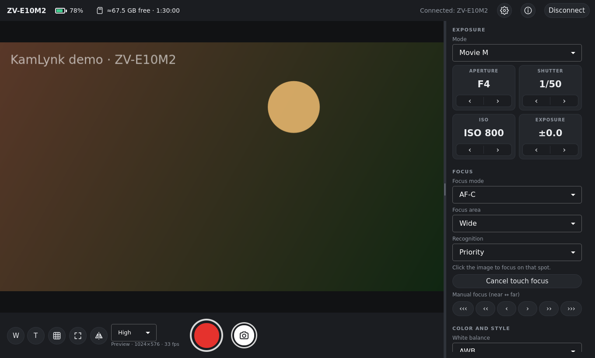

Smooth live preview
GPU-accelerated preview with full screen, rule-of-thirds grid and mirroring for framing yourself.
KamLynk turns your PC into a monitor and remote for your Sony camera: live preview, start and stop recording, adjust exposure and focus, and transfer photos, over Wi-Fi or USB. Made for the ZV-E10 II.
x86_64 · Ubuntu, Debian, Fedora, Mint, Arch, openSUSE and more · 52 MB

Use your computer screen as a big monitor and change camera settings without touching the camera. The interface adapts to what your camera supports.
GPU-accelerated preview with full screen, rule-of-thirds grid and mirroring for framing yourself.
Start and stop recording (R) with alerts if the camera stops; take photos (Space) and get them on your PC.
Mode, aperture, shutter, ISO and EV; touch to focus on the preview, manual focus, focus area and subject recognition.
White balance, Creative Look, Picture Profile, Cinematic Vlog, format, quality, frame rate, audio and zoom.
Connects through your router, Wi-Fi Direct or cable, remembers your cameras and reconnects automatically.
No account, no telemetry, no internet needed. Camera logins stay in your system keychain.
No installation needed: KamLynk is a single AppImage file that runs on most Linux distributions.
chmod +x KamLynk-*.AppImage (or right-click › Properties › allow running as a program).Made and tested with the Sony ZV-E10 II. KamLynk uses Sony's Camera Remote SDK, so other models it supports should also work, for example:
Any x86_64 distribution with glibc 2.34 or newer, on X11 or Wayland:
Yes. KamLynk is free and open source under the MIT license. The code is on GitHub.
It is made and tested with the Sony ZV-E10 II. It uses Sony's Camera Remote SDK, so other Sony cameras supported by the SDK should also work; the interface only shows the settings the connected camera reports.
Yes. Wi-Fi through your router is recommended; Wi-Fi Direct and USB also work. For USB, KamLynk installs a device rule once, asking for the administrator password.
Not yet. KamLynk is a remote and monitor for the camera; for streaming, an HDMI capture device gives the best quality.
No. KamLynk is an independent project, not affiliated with, endorsed or supported by Sony. On first start it shows the terms required by Sony's SDK (camera warranty and prohibited uses).
Download KamLynk 0.7 for Linux. It's free.
Checksums (SHA-256) and release notes are on the release page.